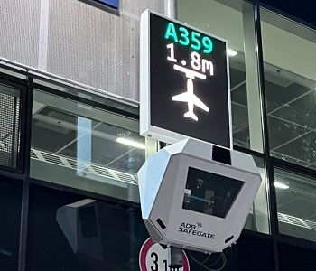
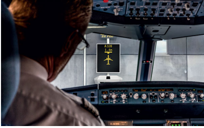

The ramp is like a busy road with airplanes, baggage carts, fuel trucks, and people all moving at once.
Ramp safety training teaches how to stay safe in this fast-moving area. By staying alert and following safety rules,
we can avoid accidents and keep ground operations running smoothly.
What Does RAMP Stand For?
RAMP means Region of Aircraft Movement and Parking.
It is the area where aircraft are parked, refueled, loaded, maintained, and moved.
All important ground work happens in this zone.
Airside vs Landside
The airport is divided into two main areas: Landside and Airside.
Landside is the public area. It includes places like ticket counters, check-in areas, and where passengers wait before security checks.
It is calm and more organized, but you still need to be alert and careful.
Airside is the restricted and high-activity zone. Only trained staff and authorized people are allowed here.
This is where aircraft are parked, refueled, loaded, and serviced. It is busy, fast-paced, and needs full attention and safety awareness.
To work on the airside, you must follow strict procedures, wear your PPE, and always be alert.
Communication and teamwork are also very important to stay safe and get the job done right.
Whether you are in the terminal (landside) or on the ramp (airside), both areas are important and need focus.
One side is full of passengers, the other full of planes—both need your attention and safety skills.
Landside vs Airside Areas
Landside
Airside
Reservation
Ramp
Check-in Counter
Maneuvering Area
Security Hold Area
Service Road
Boarding Gate
Runway
Arrivals
Taxiway
Landside Access vs Airside Access
The airport has two types of access: Landside Access and Airside Access.
Landside is open to passengers and visitors. It includes areas like ticket counters and waiting lounges.
Airside Access is restricted. Only authorized staff with a valid permit can enter. This area includes ramps, runways, and other sensitive zones.
To enter airside, you need an AEP, which stands for Aerodrome Entry Permit.
This permit is like your special key or backstage pass to get into the restricted zone.
You must always carry your AEP and wear it visibly. Without it, you cannot work or enter the airside.
Forgetting your AEP is like trying to get into a concert without a ticket—it won’t be allowed!
Always make sure your AEP is valid and not expired. Wearing your AEP proudly shows that you belong in the airside area and are authorized to work there.
Remember: safety and security come first. Follow all rules and keep your AEP visible at all times.
Airside Terminology vs Landside Terminology
At the airport, both airside and landside have their own special words to describe areas and things.
A bay is like a parking spot for planes. Each plane has its own bay where it parks to load, unload, and refuel.
The apron is the whole area where many bays are together. It is like the plane’s dressing room where it gets ready for takeoff.
The ERA (Equipment Restraint Area) is a special zone where only certain ground vehicles can park, kept neat like a VIP parking lot.
The aerobridge is the tunnel that passengers use to walk from the terminal to the plane. It’s the plane’s front porch.
You might see signs like "No Parking, No Standing" under the aerobridge. This is to keep the area clear so ground crew can work safely.
The TCL (Tail Clearance Line) is a safety line that makes sure the plane’s tail stays inside a safe zone to avoid collisions.
The service road is for airport vehicles that move around the apron. It has a speed limit of 15 km/h and is marked with white lines.
The taxiway is like a road for planes to move between the runway and the apron.
The runway is where planes take off and land—the airport’s main stage.
The maneuvering area includes both runways and taxiways. It’s only for moving aircraft—no parking allowed.
The perimeter wall surrounds the airport to keep unauthorized people and animals out. It’s the airport’s security fence.
Vehicles on the apron must follow a speed limit of 30 km/h for safety.
The safety diamond is an imaginary area around the plane marked with cones. Vehicles must move very slowly here (5 km/h) to protect the plane.
Yellow lines on the ground guide the plane to park correctly. The center line helps steer the plane, and the stop point is where the plane’s nose wheel must stop precisely.
Because planes don’t have side mirrors, wing walkers help guide the wings safely, making sure nothing gets hit.
Landside refers to the public areas like ticket counters, check-in, and arrivals. It’s where passengers start and end their journey.
A reservation means you have a confirmed seat on a flight. No reservation, no boarding.
The check-in counter is where passengers drop off bags and get boarding passes.
The arrivals area is where passengers come after their flights.
Airside Terminology
Related Terms
Bay
Taxiway
Apron
Runway
ERA (Equipment Restraint Area)
Maneuvering Area
Aerobridge
TCL (Tail Clearance Line)
No Parking / No Standing Zone (under Aerobridge)
Safety Diamond
Service Road
Center Line
Perimeter Wall / Boundary Wall
Stop Point
Speed Limit (30 kmph for vehicles)
Wing Walker
What is PPE?
PPE stands for Personal Protective Equipment. Before going to the ramp, make sure you wear your PPE.
The basic PPE kit includes:
Ramp Jacket
Safety Shoes
Earplugs
Staff handling baggage must also wear Safety Gloves to protect their hands while loading or unloading.
What to Do if Something Feels Wrong
If something doesn’t feel right or looks unsafe, report it immediately.
A quick safety check is always better than ignoring a problem.
Speaking up can prevent accidents.
Do’s and Don’ts
Do:
Use hand signals when needed to communicate clearly.
Stay alert to aircraft and equipment movement at all times.
Report any hazards or unsafe behavior immediately to supervisors.
Don’t:
Walk under aircraft wings when the engines are running or under aerobridges in motion.
Walk under aerobridges while they are moving.
Use a phone or other distractions while walking airside.
Ignore personal protective equipment (PPE) requirements or zone markings.
All new personnel will undergo 10 days of airside On-the-Job Training (OJT) to understand these rules better. After training, performance and knowledge will be reviewed.
Color Code and Speed Limit
Different colors are used on the ramp to mark areas and guide safe movement of vehicles and equipment. These colors work like traffic signals, helping everyone understand where to stop, park, or move carefully.
Ramp Color Codes and Corresponding Areas
Color
Area/Description
Red
Equipment Restraint Area (ERA), Tail Clearance Line (TCL), No Parking / No Standing Zone (under Aerobridge)
White
Service Road (general road markings)
Yellow
Center Line, Stop Point, Taxiway Lines (for aircraft)
Black and White Stripes
Restricted or Hazardous Zones (such as fuel stations, maintenance areas)
Speed Limits in Different Ramp Areas
Area/Description
Speed Limit
Service Roads
15 km/h
Perimeter Wall
30 km/h
Inside Safety Diamond
5 km/h
Under Aerobridge (No Parking Zone)
0 km/h (No Parking Allowed)
Always follow the color codes and speed limits strictly to ensure safety and smooth operations on the ramp.
10. Safety Signs
Safety signs at the airside are important to direct vehicles, personnel, and aircraft safely around the ramp area. These signs help prevent accidents and ensure smooth operations.
Service Road: Signs marking the paths where ground vehicles should travel.
ERA (Equipment Restraint Area): Zones where equipment must be parked or secured safely.
Center Line: Lines guiding aircraft and vehicles along safe routes.
Stop Point: Designated stopping locations for vehicles or aircraft.
Tail Clearance Line: Marks safe clearance distances behind aircraft.
Taxiway: Routes designated for aircraft to move between runways and gates.
Runway: Marked areas where aircraft take off and land.
Aerobridge and Passenger Ramp Alignment
An aerobridge is a movable, telescopic corridor that connects the airport terminal directly to the aircraft door. It allows passengers to board and deboard safely and comfortably without going outside.
It is strictly prohibited to stand inside the aerobridge while it is moving. This is because the moving parts can cause injuries, similar to standing on a fast-moving conveyor belt.
Parking vehicles or equipment beneath the aerobridge is not allowed due to the risk of the bridge lowering or moving unexpectedly, which could cause damage or injury.
The passenger ramp has a “no-touch” policy to avoid damaging the aircraft door. A gap of approximately 2 inches from the door and 7 inches below it must be maintained. This ensures smooth and safe boarding operations without causing damage.
Aircraft marshallers play a key role in guiding aircraft safely to the gate or parking position. They use hand signals and maintain a safe stopping distance of about 3 feet from the aircraft to prevent collisions.
It is important to always follow the marshaller’s directions and never rush the parking process. Safety is the highest priority at all times.
Equipment and Vehicles
Various types of equipment and vehicles are used on the ramp to help manage aircraft and passengers efficiently:
BFL (Baggage Freight Loader): Moves luggage and cargo onto and off the aircraft.
TUG: A vehicle used to push or pull aircraft to the gate, runway, or other locations. It also moves baggage trolleys.
Passenger Coach: Transports passengers between the terminal building and aircraft quickly and safely.
Passenger Ramp: A movable staircase used mainly for Airbus 320/321 aircraft to allow passengers to board and exit.
Trestle: Special stairs used for ATR aircraft that provide access for ground crew and passengers.
Trolley APU (Auxiliary Power Unit): Supplies power to the aircraft when the main engines are off.
GPU (Ground Power Unit): Provides external electrical power to the aircraft while it is on the ground.
Water Cart: Used to fill the aircraft’s water tanks for passenger and crew use.
Toilet Cart: Responsible for removing waste from the aircraft’s lavatories.
Understanding the function of each piece of equipment helps ensure safe and smooth operations on the ramp.
Airside Markings
Airside markings are painted lines and signs on the ramp and taxiways that guide vehicles and aircraft safely.
They help drivers and pilots know where to go and where to stop to avoid accidents.
Service Road: Path for ground vehicles to move safely without interfering with aircraft.
ERA (Emergency Response Area): Designated zone for emergency vehicles.
Center Line: Guides aircraft and vehicles along taxiways and ramps.
Stop Point: Marks where vehicles or aircraft must stop for safety checks or clearance.
Tail Clearance Line: Ensures there is enough space behind the aircraft for safe movement.
Taxiway: The path that aircraft follow to move between runways and parking areas.
Runway: The strip where aircraft take off and land.
Color Code and Speed Limit üöò
Different colors on the ramp show where vehicles and equipment can go and help keep everyone safe.
Follow these color codes and speed limits carefully to avoid accidents and keep operations smooth.
Color Codes:
Color
Area / Description
Red
Equipment Restraint Area (ERA), Tail Clearance Line (TCL), No Parking / No Standing Zone (under Aerobridge)
White
Service Road (general road markings)
Yellow
Center Line, Stop Point, Taxiway Lines (for aircraft)
Black and White Stripes
Restricted/Hazardous Zones (e.g., fuel stations, maintenance areas)
Speed Limits:
Area / Description
Speed Limit
Service Roads
15 km/h
Perimeter Wall
30 km/h
Inside Safety Diamond
5 km/h
Under Aerobridge (No Parking Zone)
0 km/h (No Parking)
Equipment and Vehicles
Various specialized equipment and vehicles are essential for smooth airside operations. Each has a specific role to support aircraft handling and passenger movement efficiently and safely.
BFL (Baggage Freight Loader): Moves luggage and cargo onto planes, preventing manual heavy lifting.
TUG: Acts like a tow truck for aircraft, pushing or pulling planes and moving trolleys around.
Passenger Coach: Shuttles passengers between the terminal and aircraft, avoiding traffic delays.
Passenger Ramp: A sturdy staircase for boarding Airbus 320/321 aircraft.
Trestle: Connects ATR aircraft to ground crew, providing a smooth three-step transition.
APU (Auxiliary Power Unit): Supplies power to the aircraft when engines are off.
GPU (Ground Power Unit): Provides external power to aircraft on the ground.
Water Cart: Refills the plane’s water supply.
Toilet Cart: Maintains aircraft sanitation by servicing toilets.
Airside Markings
Airside markings are visual guides on the ground that help manage traffic, aircraft movement, and safety zones within the airside area.
Service Road
ERA (Emergency Rescue Area)
Center Line
Stop Point
Tail Clearance Line
Taxiway
Runway
Safety Signs
Safety signs on the airside provide important information and instructions to ensure the safety of personnel, vehicles, and aircraft operations.
Service Road
ERA (Emergency Rescue Area)
Center Line
Stop Point
Tail Clearance Line
Taxiway
Runway
Aerobridge and Passenger Ramp Alignment
An aerobridge is a telescopic connector that links the terminal to the aircraft door, allowing safe and convenient passenger boarding and disembarking.
Never stand inside the aerobridge while it is moving, as it poses a serious safety hazard similar to standing on a fast-moving conveyor belt.
Parking beneath the aerobridge is prohibited to avoid the risk of injury or damage if the aerobridge moves unexpectedly.
The passenger ramp must maintain a “no-touch” gap of 2 inches from the aircraft door and 7 inches below it to prevent damage during boarding operations.
The marshaller plays a critical role by guiding the aerobridge safely, ensuring it stops approximately 3 feet from the aircraft. Always follow their instructions carefully.
Wing Walking and Marshalling
Wing walking involves guiding aircraft safely during pushback and taxiing. The wing walker acts as the eyes and ears on the ground, ensuring the plane moves smoothly without hitting obstacles.
It is essential to stay at least 1 meter (3 feet) from the wingtip to avoid injury and maintain safety. Wing walking is mandatory both day and night because aircraft require careful guidance regardless of visibility.
Wing walkers work closely with the marshaller and pushback tractor driver as part of a coordinated team, providing crucial signals and safety oversight.
Although the center line and stop point markings guide aircraft parking, wing walkers are necessary because planes lack side mirrors, so they check for obstacles near the wings.
Types of Aircraft Parking Bays
There are different types of parking bays used for aircraft depending on how the plane will move next.
Pushback Bay: The aircraft is prepared to be moved by a tug. Wing walkers signal the marshaller during this process.
Power Out Bay: The aircraft taxis out under its own power without a tug. Wing walkers give signals directly to the cockpit crew.
Clear communication and signaling ensure smooth and safe aircraft movement in both bays.
Visual Docking Guidance System (VDGS)
The Visual Docking Guidance System (VDGS) acts like a GPS for aircraft on the ground, helping pilots park precisely in the correct spot.
The marshaller plays a key role by standing near the emergency stop button, always visible to the Aircraft Maintenance Engineer (AME), ready to stop operations if necessary. This ensures maximum safety during docking.
Marshallers use hand signals to guide the aircraft safely and prevent collisions, acting like traffic controllers on the tarmac.


Arrival Activities
Effective arrival procedures ensure smooth and safe handling of incoming flights. Key steps include:
Report ETA-15: Provide allocation, estimated time of arrival (ETA), aircraft registration, and bay number 15 minutes before arrival.
Attend Team Briefing: Conducted by the Flight Manager, covering arrival details via LDM, planned loading through LIR, arrival/departure SSRs, passenger service system (PSS), and safety briefings.
Equipment Serviceability Check: Verify all necessary equipment is operational before arrival.
FOD Check: Perform a Foreign Object Debris check to ensure the airside area is clear of hazards.
üåü Congratulations on completing the Day 1 module! Hopefully, you've taken down some helpful notes along the way‚Äîthose insights will come in handy as you move forward.
This is a great opportunity to test your understanding and apply what you've learned. The first quiz is designed to be engaging and a helpful way to reinforce your knowledge.
When you're ready, click the button below to begin Quiz 1. Good luck, and remember—learning is a journey, not a race!